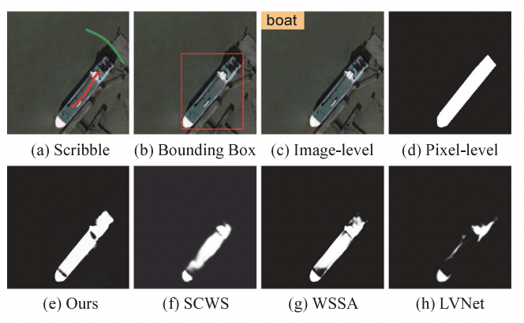

Tian-Zhu Xiang is working as a researcher and Technical Manager of Applied AI at Space42.
Before that, he was a researcher at Inception Institute of Artificial Intelligence (IIAI).
He received his PhD from LIESMARS, Wuhan University in 2019.
His research mainly focuses on computer vision, remote sensing and medical image analysis. Specifically, he is interested in camouflaged scene understanding, visual saliency, medical image segmentation and remote sensing image analysis.
You can also find the full list on Google Scholar. *: Corresponding, †Equal contributions.
ZoomNeXt: A Unified Collaborative Pyramid Network for Camouflaged Object Detection
Youwei Pang†, Xiaoqi Zhao†, Tian-Zhu Xiang†, Lihe Zhang, Huchuan Lu IEEE Transactions on Pattern Analysis and Machine Intel ligence (TPAMI), 2024
@ARTICLE{Pang2024ZoomNeXt,
author={Pang, Youwei and Zhao, Xiaoqi and Xiang, Tian-Zhu and Zhang, Lihe and Lu, Huchuan},
journal={IEEE Transactions on Pattern Analysis and Machine Intelligence},
title={ZoomNeXt: A Unified Collaborative Pyramid Network for Camouflaged Object Detection},
year={2024},
volume={46},
number={12},
pages={9205-9220},
doi={10.1109/TPAMI.2024.3417329}}
Hierarchical Graph Interaction Transformer with Dynamic Token Clustering for Camouflaged Object Detection
Siyuan Yao, Hao Sun, Tian-Zhu Xiang, Xiao Wang, Xiaochun Cao IEEE Transactions on Image Processing (TIP), 2024
@ARTICLE{yao2024hierarchical,
author={Yao, Siyuan and Sun, Hao and Xiang, Tian-Zhu and Wang, Xiao and Cao, Xiaochun},
journal={IEEE Transactions on Image Processing},
title={Hierarchical Graph Interaction Transformer With Dynamic Token Clustering for Camouflaged Object Detection},
year={2024},
volume={33},
number={},
pages={5936-5948},
doi={10.1109/TIP.2024.3475219}}
Collaborative Camouflaged Object Detection: A Large-Scale Dataset and Benchmark
Cong Zhang, Hongbo Bi*, Tian-Zhu Xiang*, Ranwan Wu, Jinghui Tong, Xiufang Wang IEEE Transactions on Neural Networks and Learning Systems (TNNLS), 2024
@ARTICLE{zhang2024cocod,
author={Zhang, Cong and Bi, Hongbo and Xiang, Tian-Zhu and Wu, Ranwan and Tong, Jinghui and Wang, Xiufang},
journal={IEEE Transactions on Neural Networks and Learning Systems},
title={Collaborative Camouflaged Object Detection: A Large-Scale Dataset and Benchmark},
year={2024},
volume={35},
number={12},
pages={18470-18484},
doi={10.1109/TNNLS.2023.3317091}}
Feature Shrinkage Pyramid for Camouflaged Object Detection with Transformers
Zhou Huang†, Hang Dai†, Tian-Zhu Xiang*, Shuo Wang, Huai-Xin Chen, Jie Qin, and Huan Xiong IEEE/CVF Conference on Computer Vision and Pattern Recognition (CVPR), 2023
@inproceedings{Huang2023Feature,
author = {Huang, Zhou and Dai, Hang and Xiang, Tian-Zhu and Wang, Suo and Chen, Huai-Xin and Qin, Jie and Xiong, Huan},
title = {Feature Shrinkage Pyramid for Camouflaged Object Detection with Transformers},
booktitle = {IEEE/CVF Conference on Computer Vision and Pattern Recognition (CVPR)},
year = {2023}
}
Memory-aided Contrastive Consensus Learning for Co-salient Object Detection
Peng Zheng, Jie Qin*, Shuo Wang, Tian-Zhu Xiang, Huan Xiong* AAAI Conference on Artificial Intelligence (AAAI), 2023
@inproceedings{zheng2023memory,
title={Memory-aided Contrastive Consensus Learning for Co-salient Object Detection},
author={Peng Zheng, Jie Qin, Shuo Wang, Tian-Zhu Xiang, Huan Xiong},
booktitle={AAAI Conference on Artificial Intelligence},
pages={},
year={2023},
}
TCNet: Co-Salient Object Detection via Parallel Interaction of Transformers and CNNs
Yanliang Ge, Qiao Zhang, Tian-Zhu Xiang*, Cong Zhang, Jing Zhang, Hongbo Bi* IEEE Transactions on Circuits and Systems for Video Technology (TCSVT), 2022
@article{ge2022tcnet,
title={TCNet: Co-Salient Object Detection via Parallel Interaction of Transformers and CNNs},
author={Yanliang Ge and Qiao Zhang and Tian-Zhu Xiang and Cong Zhang and Jing Zhang and Hongbo Bi},
journal={IEEE Transactions on Circuits and Systems for Video Technology},
pages={1-1},
year={2022},
doi={10.1109/TCSVT.2022.3225865},
publisher={IEEE}
}
@article{bi2022cross,
title={Cross-modal Hierarchical Interaction Network for RGB-D Salient Object Detection},
author={Bi, Hongbo and Wu, Ranwan and Liu, Ziqi and Zhu, Huihui and Zhang, Cong and Xiang, Tian-Zhu},
journal={Pattern Recognition},
pages={109194},
year={2022},
publisher={Elsevier}
}
Leveraging Balanced Semantic Embedding for Generative Zero-Shot Learning
Guo-Sen Xie*, Xu-Yao Zhang, Tian-Zhu Xiang*, Fang Zhao, Zheng Zhang, Ling Shao, Xuelong Li IEEE Transactions on Neural Networks and Learning Systems (TNNLS), 2022
@article{xie2022leveraging,
author={Guo-Sen Xie and Xu-Yao Zhang and Tian-Zhu Xiang and Fang Zhao and Zheng Zhang and Ling Shao and Xuelong Li},
journal={IEEE Transactions on Neural Networks and Learning Systems},
title={Leveraging Balanced Semantic Embedding for Generative Zero-Shot Learning},
year={2022},
volume={},
number={},
pages={1-8},
doi={10.1109/TNNLS.2022.3208525}
}
@article{bi2022psnet,
title={PSNet: Parallel Symmetric Network for RGB-T Salient Object Detection},
author={Bi, Hongbo and Wu, Ranwan and Liu, Ziqi and Zhang, Jiayuan and Zhang, Cong and Xiang, Tian-Zhu and Wang, Xiufang},
journal={Neurocomputing},
volume = {511},
pages = {410-425},
year={2022},
publisher={Elsevier},
doi = {https://doi.org/10.1016/j.neucom.2022.09.052},
}

Scribble-based Boundary-aware Network for Weakly Supervised Salient Object Detection in Remote Sensing Images
Zhou Huang, Tian-Zhu Xiang, Huai-Xin Chen*, Hang Dai ISPRS Journal of Photogrammetry and Remote Sensing, 2022
@article{huang2022scribble,
author={Zhou Huang and Xiang, Tian-Zhu and Huai-Xin Chen and Hang Dai},
journal={ISPRS Journal of Photogrammetry and Remote Sensing},
title={Scribble-based Boundary-aware Network for Weakly Supervised Salient Object Detection in Remote Sensing Images},
year={2022},
volume={191},
pages={290--301},
doi={https://doi.org/10.1016/j.isprsjprs.2022.07.014}
}
Trichomonas Vaginalis Segmentation in Microscope Images
Lin Li, Jingyi Liu, Shuo Wang, Xunkun Wang*, Tian-Zhu Xiang* Medical Image Computing and Computer Assisted Interventions (MICCAI), 2022
@inproceedings{li2022trich,
title={Trichomonas Vaginalis Segmentation in Microscope Images},
author={Li, Lin and Liu, Jingyi and Wang, Shuo and Wang, Xunkun and Xiang, Tian-Zhu},
booktitle={International Conference on Medical Image Computing and Computer Assisted Intervention (MICCAI)},
year={2022}
}
Boundary-Guided Camouflaged Object Detection
Yujia Sun, Shuo Wang, Chenglizhao Chen, Tian-Zhu Xiang* International Joint Conference on Artificial Intelligence (IJCAI), 2022
Zoom In and Out: A Mixed-scale Triplet Network for Camouflaged Object Detection
Youwei Pang, Xiaoqi Zhao, Tian-Zhu Xiang, Lihe Zhang* and Huchuan Lu IEEE/CVF Conference on Computer Vision and Pattern Recognition (CVPR), 2022
@inproceedings{pang2022zoom,
title={Zoom In and Out: A Mixed-scale Triplet Network for Camouflaged Object Detection},
author={Youwei Pang, Xiaoqi Zhao, Tian-Zhu Xiang, Lihe Zhang and Huchuan Lu},
booktitle={Proceedings of the IEEE/CVF Conference on Computer Vision and Pattern Recognition (CVPR)},
pages={2160--2170},
year={2022}
}
@article{Xiang2019MUAV,
author={Xiang, Tian-Zhu and Xia, Gui-Song and Zhang, Liangpei},
journal={IEEE Geoscience and Remote Sensing Magazine},
title={Mini-Unmanned Aerial Vehicle-Based Remote Sensing: Techniques, applications, and prospects},
year={2019},
volume={7},
number={3},
pages={29-63},
doi={10.1109/MGRS.2019.2918840}}
Image stitching by line-guided local warping with global similarity constraint Tian-Zhu Xiang, Gui-Song Xia*, Xiang Bai, Liangpei Zhang Pattern Recognition, 2018.
@article{xiang2018image,
title={Image stitching by line-guided local warping with global similarity constraint},
author={Xiang, Tian-Zhu and Xia, Gui-Song and Bai, Xiang and Zhang, Liangpei},
journal={Pattern recognition},
volume={83},
pages={481--497},
year={2018},
publisher={Elsevier}
}
A Fusion Algorithm for Infrared and Visible Images Based on Adaptive Dual-channel Unit-linking PCNN in NSCT Domain Tian-Zhu Xiang, Li Yan*, Rongrong Gao Infrared Physics & Technology, 2015.
@article{xiang2015fusion,
title={A fusion algorithm for infrared and visible images based on adaptive dual-channel unit-linking PCNN in NSCT domain},
author={Xiang, Tianzhu and Yan, Li and Gao, Rongrong},
journal={Infrared Physics \& Technology},
volume={69},
pages={53--61},
year={2015},
publisher={Elsevier}
}